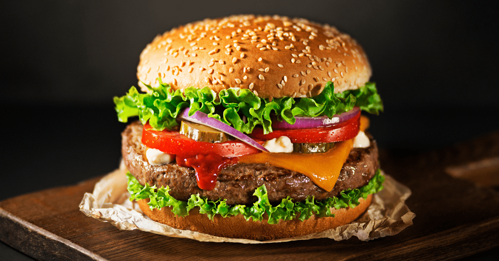

The Best Burger

Description
Our special home made burgers that you will enjoy.
Prepartion time is going to be 15 minutes. Cook time is about 5 minutes. Enough for 4 servings.
Make sure to buy your favorite pickles, which are the secret ingridents
for our burger.
Ingredients
- 4 hamburger buns
- 2 tablespoons butter, softened, or as needed.
- 1 pound ground chuck beef(80% lean)
- 4 6 inch squares parchment paper
- Salt to taste
- burger toppings of choice
Steps
- Preheat an outdoor grill for high heat and lightly oild the grate.
- Spread butter on the inside of the buns and toast.
- Form meat into 8 loosely-packed balls
- Grill for about 45 seconds and turn the sides.
- Watch some tutorial on youtube to continue.